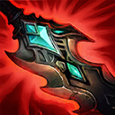

起手裝備
 長劍
長劍

調整為殞落王者之劍 → 狂暴利刃 → 無盡之刃 → 多明尼克的問候 → 守護天使；滿怒暴擊率已統一，E 額外物攻加成提高；殞落接狂暴利刃仍需保留 R 撤退時機。起手長劍，鞋線狂戰士護脛→槍銅護脛；核對五成裝、前三核心及情境替換來源。


五件成裝與鞋子分開列示；起手與核心是購買路線，不是額外佔用的成裝欄位。鞋子完成時機仍依對線壓力與回城金錢調整。


致命節奏／兇蠻／背水一戰／傳奇：敏捷／光輝披風。依滿怒暴擊率已統一，E 額外物攻加成提高；殞落接狂暴利刃仍需保留 R 撤退時機核對觸發條件；確認主系各列一枚與一枚副系，First Strike映射先發制人、Empowerment映射遇強則強。


鬼步提供持續貼身追擊，仍保留重擊與物件控制。 本英雄以攻速鬥士／怒氣暴擊／不死收割定位使用；7.3b不改重擊主動斬殺值，需看進化與充能。
加點優先：Q > E > W
優先級Q > E > W；保留適合本頁清營的前三級，之後依優先級逐級檢查，R在5／9／13級。此為15級編輯順序，不宣稱逐場固定最優。
透過普攻與擊殺累積怒氣；7.3b每點怒氣固定提供0.5%暴擊率。7.3已移除命中英雄後的額外攻速。
有後續版本調整的項目以較新數值為準；未列出者不代表完整技能成長表。
有後續版本調整的項目以較新數值為準；未列出者不代表完整技能成長表。

生命越低被動物攻越高；主動消耗怒氣回復生命。
有後續版本調整的項目以較新數值為準；未列出者不代表完整技能成長表。
降低附近敵人的物攻，若敵人背對泰達米爾還會受到明顯緩速。
有後續版本調整的項目以較新數值為準；未列出者不代表完整技能成長表。
旋轉位移並傷害沿途敵人，暴擊可協助縮短冷卻，是追擊與穿牆工具。
有後續版本調整的項目以較新數值為準；未列出者不代表完整技能成長表。
有後續版本調整的項目以較新數值為準；未列出者不代表完整技能成長表。
短時間維持不死狀態並取得怒氣，能在瀕死時繼續交戰；7.3 不再提高被動攻速。
有後續版本調整的項目以較新數值為準；未列出者不代表完整技能成長表。
滿怒暴擊率已統一，E 額外物攻加成提高；殞落接狂暴利刃仍需保留 R 撤退時機。已核對既有技能摘要、連招操作條件及前中後期說明；沒有足夠證據改寫其餘完整技能成長數值。
3技 → 普攻 → 1技治療
旋風斬接近後打一至兩次普攻，血量不佳時用一技消耗怒氣回復。
2技 → 3技 → 普攻 → 普攻
從敵人背後施放二技造成減速，再用三技貼近持續普攻。
4技 → 普攻 → 3技撤退 → 1技治療
瀕死前開大維持生命，完成擊殺後用三技離塔並在大絕結束前回復。
先累積怒氣再進行河道或野區交戰，低怒氣時不要高估暴擊能力。三技穿過多個野怪可加快清野，Gank 時從敵人背後施放二技才會觸發緩速。 7.3b每點怒氣暴擊率固定0.5%，不再隨等級由0.3%成長；滿怒仍須保留三技或大絕撤退手段。
殞落王者之劍 → 狂暴利刃 → 無盡之刃為預設前段順序。滿怒暴擊率已統一，E 額外物攻加成提高；殞落接狂暴利刃仍需保留 R 撤退時機。後兩格依敵方實際威脅替換；先完成關鍵核心，再決定防裝與穿透，支援物件前確認重擊充能及隊友線權。
正面團戰容易被風箏，應從側翼切入或先在邊線製造壓力。無盡怒火結束前用三技脫離，再消耗怒氣用一技回復，避免大絕結束後立即倒下。
以同頁打野威脅名單拉姆斯、夜曲、阿姆姆更新，有利名單僅是既有機制判斷，排除與威脅重複者；泰達米爾入侵仍看兩側線權、血量及關鍵技能，不當作固定單挑勝率。
對局名單是機制與分路判斷，不代表固定勝率；需同時看雙方熟練度、兵線與陣容。
替換以本頁五件成裝為基準；同一格建議擇一。二、三級鞋是一條升級線，換鞋時整條同步；魔劍進化不占新欄位。
高
觸發：敵方前排物防／魔防成形，或近身普攻威脅明顯。
已帶對應穿透或冰霜之心時保留，不重複購買；依實際傷害類型決定。
高
觸發：主要死亡原因是一輪集火，無法完成輸出或控制。
同一格有多個建議時擇一；核心成形後依實際威脅調整。
高
觸發：敵方法術先手或持續魔法傷害成為主要威脅。
守護天使 → 魔提斯深淵
依魔法傷害壓力補魔防；已有命脈裝時改用自然之力，避免重複命脈。
依魔法傷害壓力補魔防；已有命脈裝時改用自然之力，避免重複命脈。
高
觸發：魔法傷害與控制鏈影響生存或輸出。
狂戰士護脛 → 水星之靴
魔法傷害及可被韌性縮短的控制占主導時，鞋線整條改水星之靴→鎖鏈軍靴。
魔法傷害及可被韌性縮短的控制占主導時，鞋線整條改水星之靴→鎖鏈軍靴。
韌性不能縮短所有控制，例如擊飛；護盾與解控各有適用條件。
高
觸發：敵人持續回復令集火失敗。
多明尼克的問候 → 致死宣告
回復威脅比原穿透裝的特殊效果更重要時，替換而非再疊一件。
回復威脅比原穿透裝的特殊效果更重要時，替換而非再疊一件。
7.3d差異核對：本頁核對官方英雄／裝備差異與現行配置參照；未列的技能不表示已完成逐級實測。查看校正範圍。
本頁校正版本：7.3d；校正日期：2026-10-25。
參考來源標示版本：7.3c
本輪核對官方版本差異、道具/符文引用、五成裝與鞋線、逐級加點及情境替換一致性。Tier及玩法屬本站編輯判斷，不是官方排名或台服勝率；未公開的全級技能表不推算。
評級理由：7.3c 維持 C（本站判斷）。依同分路7.3b參考 C，A → C，作本站評級。 滿怒暴擊率已統一，E 額外物攻加成提高；殞落接狂暴利刃仍需保留 R 撤退時機；沒有台服同分路勝率樣本。 7.3c 未改動此分路的英雄數值，沒有新證據只因版本號而升降。
Riot 官方資料 ↗ · Riot 官方資料 ↗ · Riot 官方資料 ↗ · Riot 官方資料 ↗ · Riot 官方資料 ↗ · WildRiftFire 參考攻略 ↗
7.3c 的直接英雄倍率改動屬符文大亂鬥；本召喚峽谷配置承接 7.3b。未把模式專屬增削轉為峽谷增削。
五件成裝、獨立鞋線、起手、核心、情境替換引用與一般符文列別均重新檢查；移除裝備不列入當前推薦。
歷史資料有後續調整時，以較新版本數值為準。
| 項目 | 調整前 | 調整後 |
|---|---|---|
| 每點怒氣的暴擊率 | 0.3%–0.5%（隨等級） | 0.5% |
| 項目 | 調整前 | 調整後 |
|---|---|---|
| 傷害 | 80/120/160/200＋100%額外物攻＋80%魔攻 | 80/130/180/230＋110%額外物攻＋80%魔攻 |
歷史資料有後續調整時，以較新版本數值為準。
| 項目 | 調整前 | 調整後 |
|---|---|---|
| 基礎物攻 | 54 | 64 |
| 每級物攻 | 5.5 | 5 |
| 每級物防 | 3.9 | 4.5 |
| 項目 | 調整前 | 調整後 |
|---|---|---|
| 被動命中英雄攻速 | 30%，持續 5 秒；結束後冷卻 6 秒 | 移除 |
| 項目 | 調整前 | 調整後 |
|---|---|---|
| 物攻 | 7 / 12 / 17 / 22 | 0 |
| 每1%已損失生命額外物攻 | 0.35 / 0.40 / 0.45 / 0.5 | 0.3 / 0.5 / 0.7 / 0.9 |
| 項目 | 調整前 | 調整後 |
|---|---|---|
| 物攻傷害減免 | 40% | 20 / 40 / 60 / 80% |
| 項目 | 調整前 | 調整後 |
|---|---|---|
| 傷害 | 80 / 120 / 160 / 200 + 135%額外物攻 + 100%魔攻 | 80 / 120 / 160 / 200 + 100%額外物攻 + 80%魔攻 |
| 暴擊時會觸發冷卻時間減免的目標 | 士兵 | 士兵、野怪、英雄召喚單位，以及其他可以被暴擊的單位 |
| 項目 | 調整前 | 調整後 |
|---|---|---|
| 大絕提高被動攻速 | 45 / 60 / 75% | 移除 |